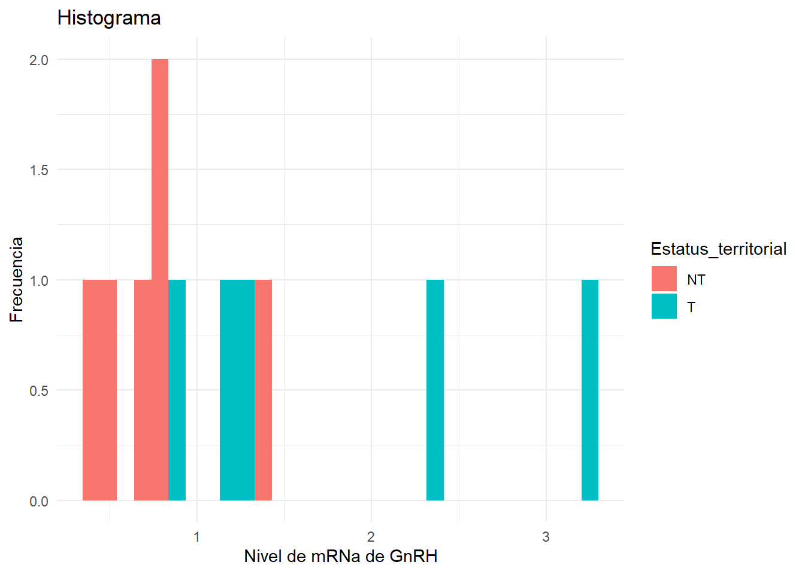
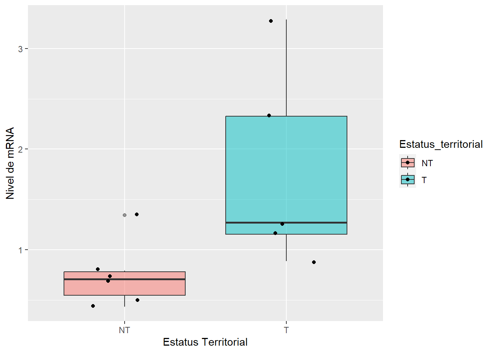
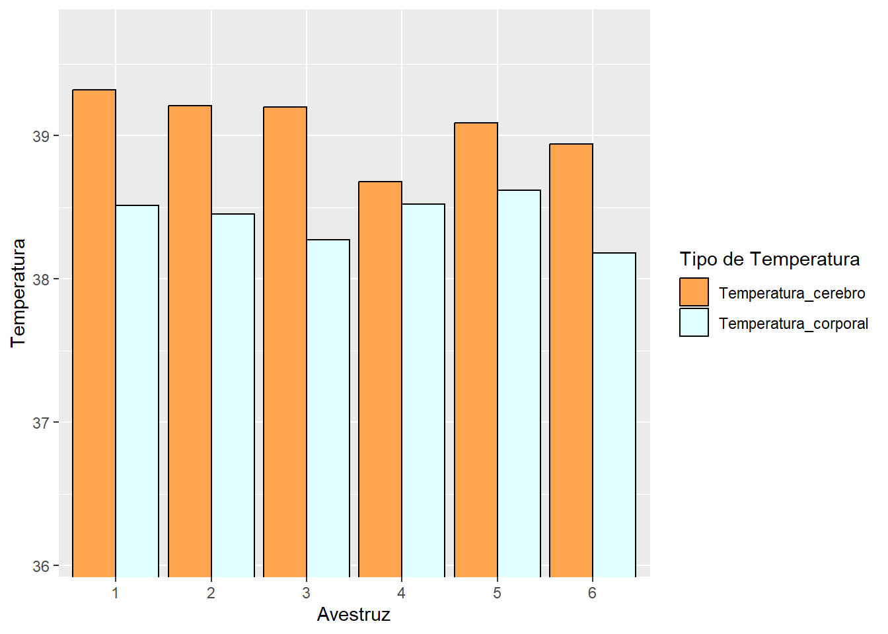
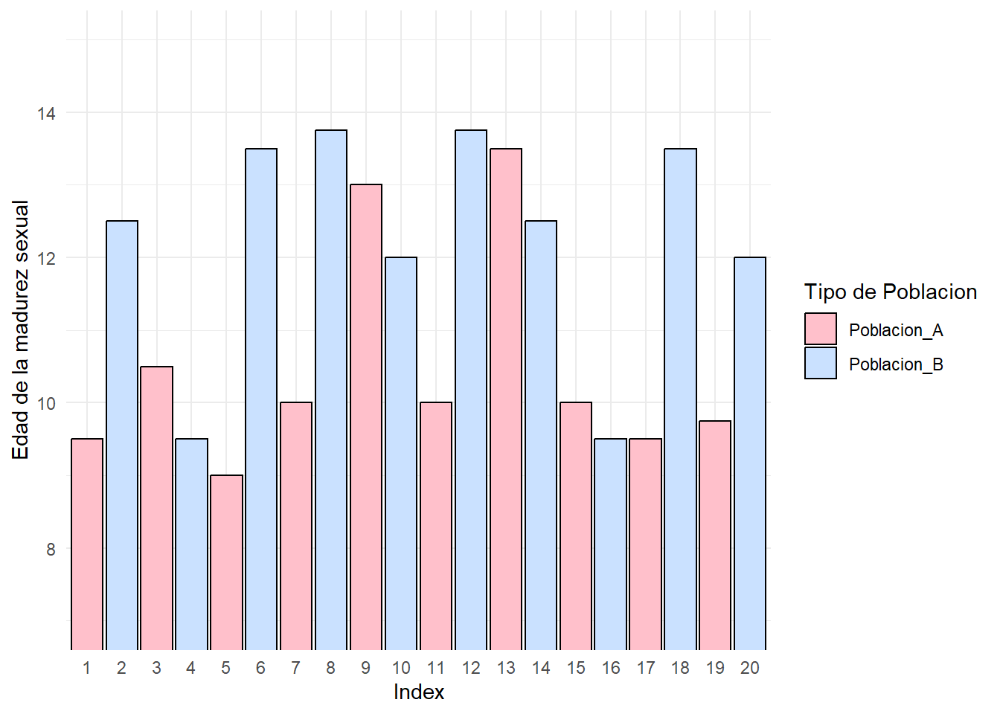
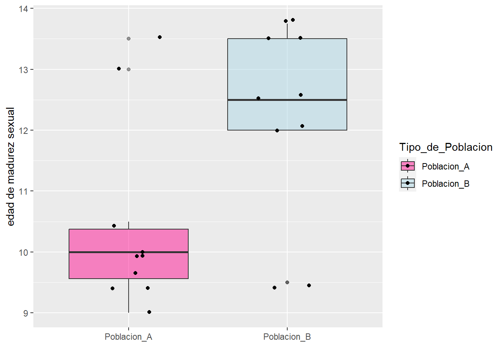
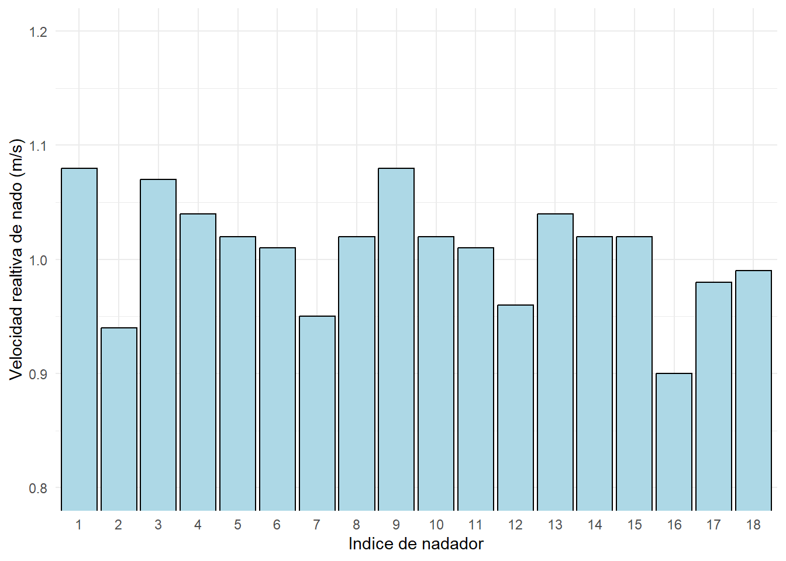
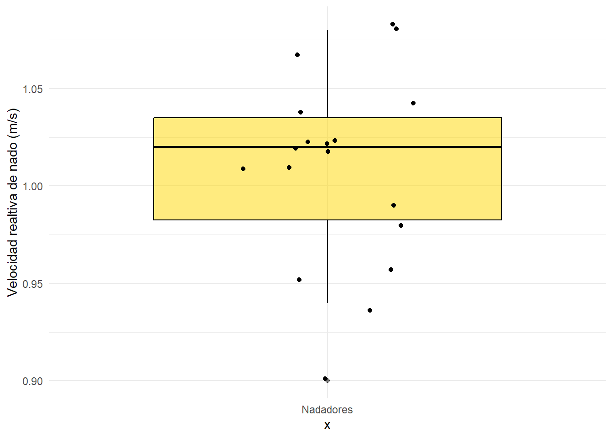

Taller 04 - Pruebas estadísticas paramétricas y no paramétricas
Autores/as
Integrante 1 Nicolas Montoya Leon - 202310678
Integrante 2 John Anderson Acosta - 202212004
Integrante 3 Raquel Bautista Escobar - 202310296
Fecha de publicación
21 de febrero de 2024
En este taller les planteamos preguntas científicas con su respectivo diseño experimental y toma de datos. Su tarea es realizar la prueba estadística (paramétrica o no paramétrica) adecuada en cada caso para para analizar los datos y llegar a la conclusión estadística adecuada. Todos los datos se encuentran en el archivo datos-04.xlsx
En todos los puntos del taller debe realizar todos los siguientes pasos:
Explorar visualmente el conjunto de datos asociado a la investigación.
Plantear la hipótesis nula y la alternativa teniendo en cuenta la pregunta de investigación mencionada.
Defina el nivel de significancia (\(\alpha\)) y justificar su criterio.
Evaluar la normalidad de las variables que lo requieran.
Escoger la prueba estadística adecuada (validar que se cumplan todos los supuestos para su criterio).
Aplicar la prueba estadística.
Discutir sus resultados.
1.[1.25 puntos] Los machos de algunas especies de peces cíclidos son fértiles hasta unos pocos días después de que ellos se han vuelto socialmente dominantes en presencia de hembras. Machos sin un territorio (y por lo tanto sin esperanza de apareamiento) tienen genitalia atrofiada, mientras que machos con control de territorio y con hembras, tienen genitalia bien desarrollada. Ellos pueden cambiar de un estado a otro en cuestión de días. White et al., 2002 quisieron conocer la señal hormonal para este cambio, y una hormona candidata es la gonadotropina (GnRH). Ellos midieron el ARN mensajero (mRNA) de GnRH para cinco peces territoriales (T) y para seis peces no territoriales (NT).
Asuma que el muestreo fue aleatorio e independiente. ¿Existe diferencia en el promedio de los niveles de mRNA de GnRH para machos con y sin territorio?
library(tidyverse)
── Attaching core tidyverse packages ──────────────────────── tidyverse 2.0.0 ──
✔ dplyr 1.1.4 ✔ readr 2.1.5
✔ forcats 1.0.0 ✔ stringr 1.5.1
✔ ggplot2 3.4.4 ✔ tibble 3.2.1
✔ lubridate 1.9.3 ✔ tidyr 1.3.1
✔ purrr 1.0.2
── Conflicts ────────────────────────────────────────── tidyverse_conflicts() ──
✖ dplyr::filter() masks stats::filter()
✖ dplyr::lag() masks stats::lag()
ℹ Use the conflicted package (<http://conflicted.r-lib.org/>) to force all conflicts to become errors
#ii#H0= Los niveles mRNA de GnRH se encuentran distribuidos de manera aleatoria entre los peces#HA = Los niveles de mRNA de GnRH se distribuyen teniendo en cuenta el factor de territorio#iii# En este caso el nivel de significancia a emplear corresponde a α=0.05 dado que este valor es el empleado por defecto.#iVp_normal<-shapiro.test(peces$`Nivel_de_mRNA_de_GnRH`)p_normal
Shapiro-Wilk normality test
data: peces$Nivel_de_mRNA_de_GnRH
W = 0.8068, p-value = 0.01156
head(peces)
distr_normal <-ggplot(peces, aes(x= Nivel_de_mRNA_de_GnRH, fill = Estatus_territorial)) +geom_histogram() +labs(x ="Nivel de mRNa de GnRH",y ="Frecuencia",title ="Histograma" ) +theme_minimal()distr_normal
`stat_bin()` using `bins = 30`. Pick better value with `binwidth`.

#En este caso corresponde a una distribución no normal#v# En este caso uno de los criterios a tener en cuenta para escoger la prueba estadíatica a emplear, es determinar si las varianzas son iguales o no, por lo cual se realiza lo siguiente.varia<-peces|>filter(Estatus_territorial=="NT")varia2<-peces|>filter(Estatus_territorial=="T")res1<-var(varia$Nivel_de_mRNA_de_GnRH)res2<-var(varia2$Nivel_de_mRNA_de_GnRH)cat ("La varianza para los NT es de ",res1)
La varianza para los NT es de 0.1044672
cat ("La varianza para los T es de ",res2)
La varianza para los T es de 1.005581
#A partir de este resultado determinamos que las varianzas son diferentes y que por ende se procede a aplicar un Wilcox testx<-wilcox.test(Nivel_de_mRNA_de_GnRH ~ Estatus_territorial, peces, paired =FALSE)x
Wilcoxon rank sum exact test
data: Nivel_de_mRNA_de_GnRH by Estatus_territorial
W = 3, p-value = 0.0303
alternative hypothesis: true location shift is not equal to 0
#vi#Para facilitar el análisis de los resultados, se elabora una gráfica de bigotes.ggplot( peces,aes(x = Estatus_territorial,y = Nivel_de_mRNA_de_GnRH,fill = Estatus_territorial )) +geom_boxplot(alpha =0.5) +geom_jitter(width =0.2) +labs(y ="Nivel de mRNA",x ="Estatus Territorial", )

#vii# En ete caso podemos, en primer lugar, confirmar que existe una diferenciación clara entre las muestas NT y T. Adicionalmente el test de Wilcox arrojó un valor de p= 0.0303, que en este caso, al ser alpha=0.05, se podría dercartar la hipótesis nula (H0) y optar por la hipótesis alternativa.
2.[1.25 puntos] Las avestruces viven en ambientes cálidos y normalmente están expuestas al sol por largos periodos de tiempo. Los mamíferos en ambientes similares tienen mecanismos especiales para reducir la temperatura del cerebro en relación a la temperatura del cuerpo. Se quiere saber sí las avestruces pueden hacer lo mismo (Fuller et al., 2003). La temperatura media del cuerpo y del cerebro de seis avestruces fue registrado en condiciones típicas de calor. Los resultados en ºC son los siguientes:
Asuma que el muestreo fue aleatorio e independiente. Determine si existe alguna diferencia entre la temperatura corporal y la temperatura del cerebro en las avestruces (grafique los resultados).
#ii#H0=Las temperaturas corporales y cerebrales son similares#HA=Las temperatuas corporales y cerebrales difieren#iii# En este caso el nivel de significancia a emplear corresponde a α=0.05 dado que se trata de una distribucion normal y este valor es el empleado por el investigadon en el mencionado articulo.#ivp_normal<-shapiro.test(avestruces$`Temperatura_corporal`)p_normal
Shapiro-Wilk normality test
data: avestruces$Temperatura_corporal
W = 0.92434, p-value = 0.5371
Shapiro-Wilk normality test
data: avestruces$Temperatura_cerebro
W = 0.92054, p-value = 0.5092
# En este caso al obtener valores p de 0.05371 y de p=0.05092 se puede afirmar que es una distribución normal#vvaria<-var(avestruces$Temperatura_corporal)varia2<-var(avestruces$Temperatura_cerebro)cat ("La varianza de la temperatura corporal es de ",varia)
La varianza de la temperatura corporal es de 0.02779
cat (" La varianza de la temperatura cerebral es de ",varia2)
La varianza de la temperatura cerebral es de 0.05366667
#Teniendo en cuenta la similitud en las varianzas y que se trata de una distribución normal, en este caso se escogió un test de distribución T, especificando que se trata de datos pareados.t.test(avestruces$Temperatura_cerebro, avestruces$Temperatura_corporal, paired =TRUE, alternative ='two.sided', conf.level =0.95)
Paired t-test
data: avestruces$Temperatura_cerebro and avestruces$Temperatura_corporal
t = 5.6099, df = 5, p-value = 0.002489
alternative hypothesis: true mean difference is not equal to 0
95 percent confidence interval:
0.3512547 0.9454120
sample estimates:
mean difference
0.6483333
# Para evaluar con mas exactitud esta diferencia y observar las diferencias entre la temperatura corporal y cerebrales, se usara una prueba de dos muestras independientes, conociendo que los supuesto de distribución normal, varianza y muestreo independiente y aleatorio cumple#vi# Para evaluar con mas exactitud esta diferencia y observar las diferencias entre la temperatura corporal y cerebrales, se usara un histograma que evidenvia si existe alguna diferencia entre las temperaturas.avestruces_filtro <- avestruces |>pivot_longer(c(Temperatura_corporal, Temperatura_cerebro), names_to ="posición_temperatura", values_to ="Temperatura") ggplot(avestruces_filtro, aes(x =factor(Avestruz), y = Temperatura, fill = posición_temperatura)) +geom_histogram(stat ="identity", position ="dodge", color ="black") +labs(x ="Avestruz", y ="Temperatura", fill ="Tipo de Temperatura") +coord_cartesian(ylim =c(36.1, 39.7)) +scale_fill_manual(values =c("tan1", "lightcyan"))
Warning in geom_histogram(stat = "identity", position = "dodge", color =
"black"): Ignoring unknown parameters: `binwidth`, `bins`, and `pad`

#vii#Con base en los resultados obtenidos, podemos concluir que la H0 se rechaza dado que el valor p ultilizado fue de 0.5092. Asimismo, en la gráfica de temperaturas donde comparamos la temperatura corporal con la temperatura del cerebro, podemos ver una diferencia que es significativa, por lo que aceptamos la hipótesis alternativa.
3.[1.25 puntos] Investigadores desean saber si es posible concluir que dos poblaciones de juveniles de cierta especie difieren en la edad promedio en la cual llegan a la madurez sexual. Los datos son los siguientes: (Asuma que el muestreo fue aleatorio e independiente)
#ii#H0 = Los juveniles de ambas poblaciones en promedio alcanzan a la madurez sexual a edades significativamente similares.#HA = Los juveniles de ambas poblaciones en promedio alcanzan a la madurez sexual a edades diferentes. #iii# En este caso el nivel de significancia que se usara corresponde a α=0.05 dado que este valor es el empleado comunmente en investigaciones.#ivp_normal<-shapiro.test(juveniles$`Poblacion_A`)p_normal
Shapiro-Wilk normality test
data: juveniles$Poblacion_A
W = 0.76062, p-value = 0.004808
Shapiro-Wilk normality test
data: juveniles$Poblacion_B
W = 0.81974, p-value = 0.02516
Juveniles_filtro <- juveniles |>pivot_longer(c(Poblacion_A, Poblacion_B), names_to ="Tipo_de_Poblacion", values_to ="Edad_promedio") Juveniles_filtro <- Juveniles_filtro |>mutate(row_index =row_number())ggplot(Juveniles_filtro, aes(x =factor(row_index), y = Edad_promedio, fill = Tipo_de_Poblacion)) +geom_histogram(stat ="identity", position ="dodge", color ="black") +labs(x ="Index", y ="Edad de la madurez sexual", fill ="Tipo de Poblacion") +theme_minimal() +coord_cartesian(ylim =c(7, 15)) +scale_fill_manual(values =c("pink", "lightsteelblue1"))
Warning in geom_histogram(stat = "identity", position = "dodge", color =
"black"): Ignoring unknown parameters: `binwidth`, `bins`, and `pad`

# Al observar el valor P de cada set de datos, se concluye que ambos conjuntos de datos tienen valores de p significativos, lo que sugiere que no siguen una distribución normal.#v#Al no poderse hacer ninguna transformación conocida para los datos, y sabiendo que el muestreo fue aleatorio e independiente se podria realizar una wilcox.test(). si cumple con la condicion de una varianza significativavaria<-var(juveniles$Poblacion_A)varia2<-var(juveniles$Poblacion_B)cat ("La varianza de la poblacion A respecto a la media o valor esperado de los datos es de ",varia)
La varianza de la poblacion A respecto a la media o valor esperado de los datos es de 2.311806
cat (" La varianza de la poblacion B respecto a la media o valor esperado de los datos es de ",varia2)
La varianza de la poblacion B respecto a la media o valor esperado de los datos es de 2.555556
#A partir de este resultado determinamos que las varianzas son diferentes y que por ende se procede a aplicar un Mann-Whitney con un wilcox.test().wilcox_result <-wilcox.test(juveniles$Poblacion_A, juveniles$Poblacion_B, paired =TRUE, alternative ='two.sided', conf.level =0.95)
Warning in wilcox.test.default(juveniles$Poblacion_A, juveniles$Poblacion_B, :
cannot compute exact p-value with ties
wilcox_result
Wilcoxon signed rank test with continuity correction
data: juveniles$Poblacion_A and juveniles$Poblacion_B
V = 10, p-value = 0.08213
alternative hypothesis: true location shift is not equal to 0
#vi#Para facilitar el análisis de los resultados, se elabora una gráfica de bigotes.ggplot( Juveniles_filtro,aes(x = Tipo_de_Poblacion,y = Edad_promedio,fill = Tipo_de_Poblacion )) +geom_boxplot(alpha =0.5) +geom_jitter(width =0.2) +labs(y ="edad de madurez sexual",x ="", ) +scale_fill_manual(values =c("deeppink", "lightblue"))

#vii#De acuerdo a los resultados obtenidos y a las gráficas, podemos decir que las edades respecto a la maduración sexual difieren significartivamente, de modo que aceptamos la hipótesis alternativa.
4.[1.25 puntos] ¿Pueden los humanos nadar más rápido en agua que en “Syrup”? Se desconoce si el incremento en la fricción del cuerpo moviéndose a través del “Syrup” es compensado por el incremento en el poder de cada brazada. En un experimento, se llenó una piscina con agua mezclada con “Syrup” y otra piscina con agua normal (Gettelfinger & Cussler, 2004). Ellos tenían 18 deportistas nadando en ambas piscinas. Los datos son presentados como la velocidad relativa de cada nadador (velocidad en la piscina de “Syrup” dividida por la velocidad en la piscina de agua). Sí el “Syrup” no tiene ningún efecto sobre la velocidad, el coeficiente debería ser 1 en promedio.
#isyrup <-read_excel("Syrup.xlsx") syrup
#ii#H0= No habrá ningun incremento de poder de la brazada al nadar en syrup y por ende las velocidades de los nadadores en syrup serán menores.#HA= Habra incremento de poder de la brazada al nadar en syrup y por ende las velocidades de los nadadores en syrup y los nadadores en agua no diferirán.#iii# En este caso el nivel de significancia que se usara corresponde a α=0.01 dado que se supondra la variable actua como una distribucion normal y este valor es empleado en el articulo.#ivp_normal<-shapiro.test(syrup$`Velocidad_relativa_de_nado`)p_normal
Shapiro-Wilk normality test
data: syrup$Velocidad_relativa_de_nado
W = 0.94709, p-value = 0.3812
syrup_filtro <- syrup |>mutate(row_index =row_number())ggplot(syrup_filtro, aes(x =factor(row_index), y = Velocidad_relativa_de_nado)) +geom_histogram(stat ="identity", position ="dodge", color ="black", fill ="lightblue") +labs(x ="Indice de nadador", y ="Velocidad realtiva de nado (m/s)") +theme_minimal() +coord_cartesian(ylim =c(0.8, 1.2))
Warning in geom_histogram(stat = "identity", position = "dodge", color =
"black", : Ignoring unknown parameters: `binwidth`, `bins`, and `pad`

# Al observar el valor P de 0.3812 sugiere que no hay pruebas suficientes para concluir que los datos se desvían significativamente de una distribución normal y por lo tanto siguen un patron de una distribución normal.#v#Al no poderse hacer ninguna transformacion conocida para los datos, y sabiendo que el muestreo fue aleatorio e independiente se podria realizar una t.test() de una sola variable para interpretar los datos. Asimismo, si cumple con la condicion de una varianza significativa se podira concluir que sigue una distribucion normal y aplicar una prueba estadistica de una muestra.varia<-var(syrup$Velocidad_relativa_de_nado)cat (" La varianza de la poblacion de nado respecto a la media o valor esperado de los datos es de ",varia)
La varianza de la poblacion de nado respecto a la media o valor esperado de los datos es de 0.002355882
#A partir de este resultado determinamos que las varianza es destacadamente baja y que por ende se procede a aplicar una Prueba de una muestra con un t.test().y <-t.test(syrup$Velocidad_relativa_de_nado, alternative ='greater', conf.level =0.99)y
One Sample t-test
data: syrup$Velocidad_relativa_de_nado
t = 88.138, df = 17, p-value < 2.2e-16
alternative hypothesis: true mean is greater than 0
99 percent confidence interval:
0.9789666 Inf
sample estimates:
mean of x
1.008333
#vi#al observar los datos se obtiene que "sample estimates:mean of x 1.008333" lo que significa que la media aritmetica es 1, por lo que se concluye que el “Syrup” no tiene ningún efecto sobre la velocidad#Para facilitar el análisis de los resultados, se elabora una gráfica de bigotes.ggplot(syrup_filtro, aes(x ="Nadadores", y = Velocidad_relativa_de_nado)) +geom_boxplot(alpha =0.5, color ="black", fill="gold") +geom_jitter(width =0.2) +labs(y ="Velocidad realtiva de nado (m/s)", ) +theme_minimal()

#vii#Teniendo en cuenta que la velocidad relativa de nado es la velocidad en la piscina de “Syrup” dividida por la velocidad en la piscina de agua y que el coeficiente debe equivaler a 1 en dado caso que las velocidades no sufran alteraciones, sabemos que, si nadan más lento en el syrup el coeficiente es <1 pero, si la velocidad es mayor en syrup, debe ser >1. Por consiguiente, debido a que en la mayoría de los casos este es <1, podemos afirmar la hipótesis nula, que las velocidades de los nadadores en syrup serán menores.